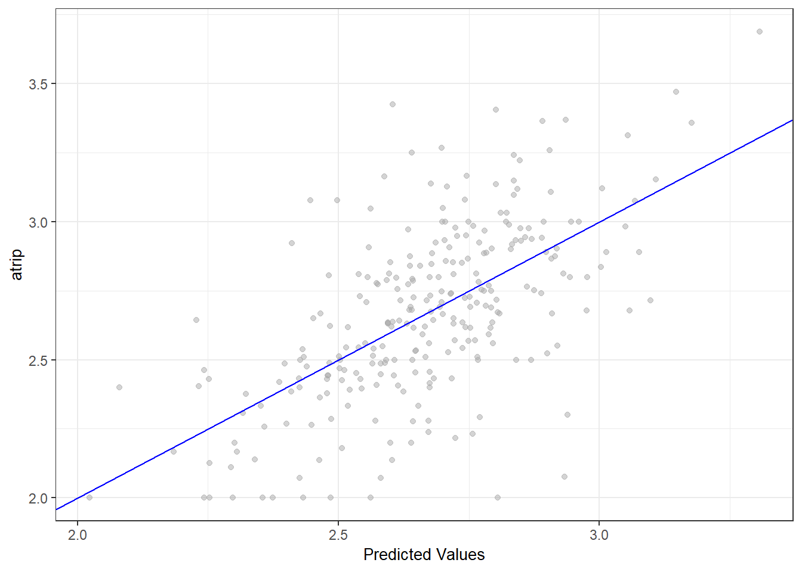
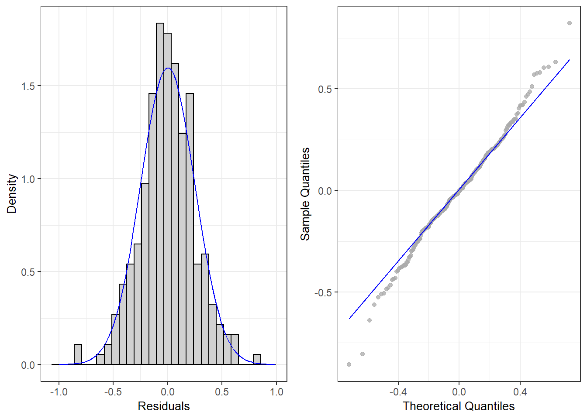
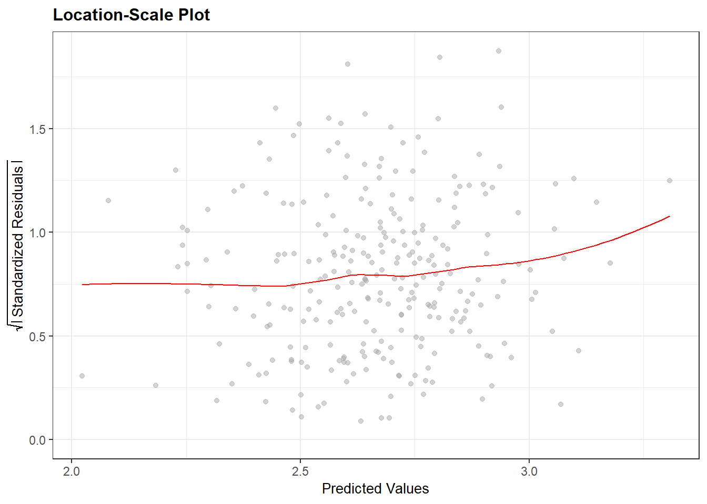
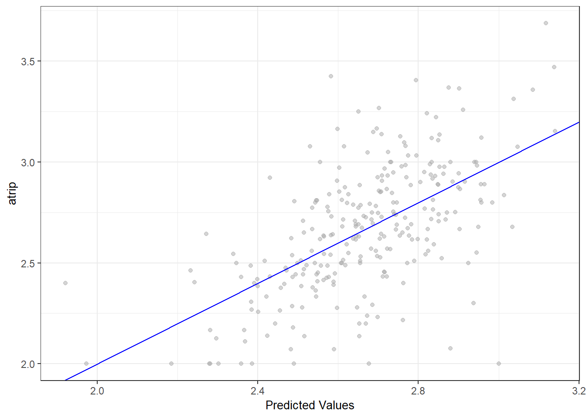
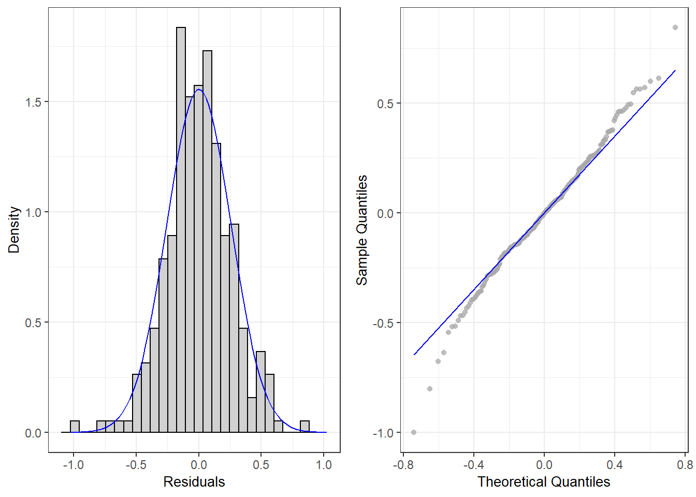
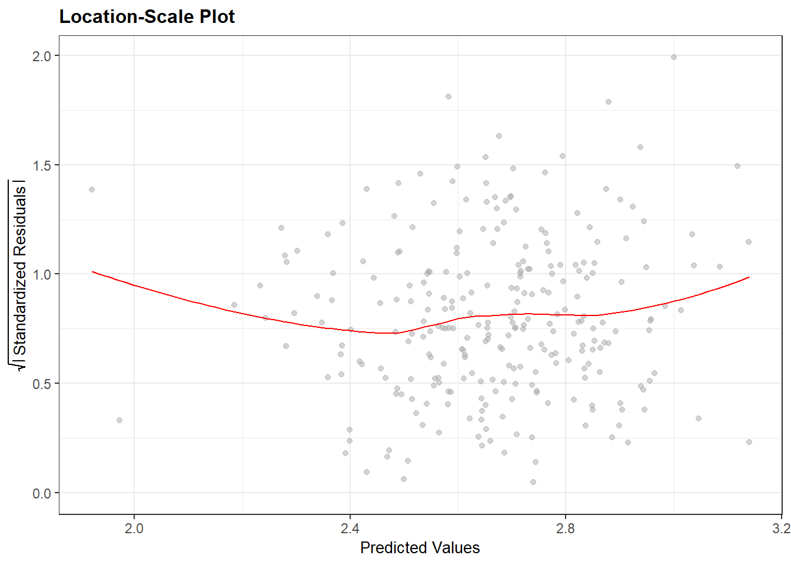
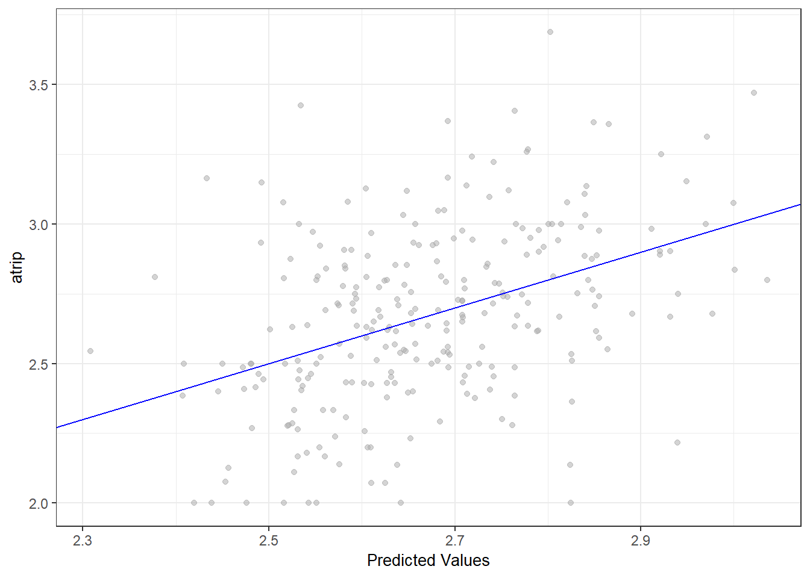
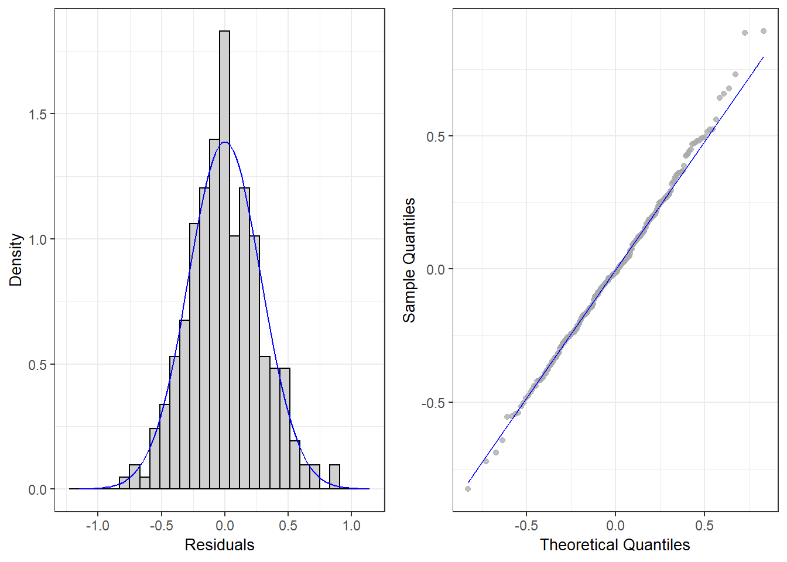
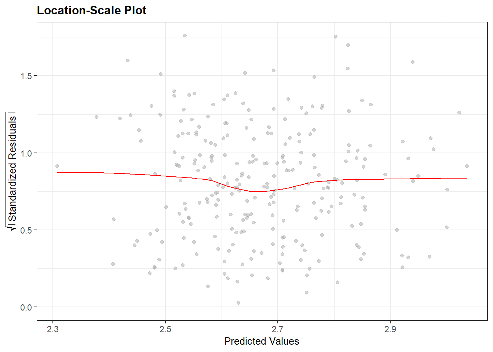

5 Models
We have fit a model with factors’ scores of the factor analysis and two models with the original independent variables (Table 6.1).
5.1 Model 1
Model 1 was built with the dataset without outliers. No variables were standardized. Variables AcessMetroResid, ATTD and DCBD were transformed with log-plus-one.
All regression assumptions were met.
To build Model 1 we ran stepwise algorithms with the ols_best_step_subset function of the olsrr package (Hebbali 2020) and identified the subset AActT, lp1_AcessMetroResid, ATTT, lp1_DCBD ParkingOrigin, Personal, TCPass, and Work with the lowest AIC (32.1615) and the highest adjusted R2 (.3964) . Fitting the model with this subset, we removed predictors that were not significant at the p<.05 level in a stepwise manner. We first removed lp1_AcessMetroResid and then AvCar. The resulting model has 7 predictors: AActT, ATTT, lp1_DCBD, Parking Origin, Personal, TCPass and Work.
A multiple linear regression was calculated to predict atrip based on AActT, ATTT, lp1_DCBD ParkingOrigin, Personal, TCPass, and Work (Table 5.1). All variables were significant predictors of atrip at the p<.01 level . A significant regression equation was found (F-statistic (7,262) =23.7 p-value <.001), with an R2 of .388
| Predictors | Estimates | CI | p |
|---|---|---|---|
| (Intercept) | 2.65 | 2.31 – 3.00 | <0.001 |
| AActT | 0.15 | 0.10 – 0.19 | <0.001 |
| ATTT | 0.11 | 0.07 – 0.14 | <0.001 |
| lp1 DCBD | -0.10 | -0.15 – -0.05 | <0.001 |
| ParkingOrigin | 0.35 | 0.15 – 0.55 | 0.001 |
| Personal | -0.68 | -1.17 – -0.20 | 0.006 |
| TCPass | -0.66 | -0.90 – -0.43 | <0.001 |
| Work | -0.74 | -1.15 – -0.33 | <0.001 |
| Observations | 270 | ||
| R2 / R2 adjusted | 0.388 / 0.371 |
5.1.1 Linearity
The DV has a linear relationship with the multiple IVs in Model 1 (Figure 5.1).
Figure 5.1: Residual versus Predicted Model 1
5.1.2 No or little autocorrelation
There is no autocorrelation detected in the model according to the Durbin-Watson test (t-statistic= 1.8, p-value=0.52).
5.1.3 Normality of residuals
Residuals of Model 1 are normally distributed as shown by its Residuals’ Histogram and QQ Plot (Figure 5.2) and confirmed by the Shapiro-Wilk test results (t-statistic=.99, p-value=.16).
Figure 5.2: Residuals’ Histogram and QQ Plot Model 1
5.1.4 No or little multicollinearity
All of the IVs are correlated to at least one other IV at a correlation Pearsons’ coefficient equal or higher than .3 (Figure 4.1). There is multicollinearity in the model but it is low and variance inflation factors (VIFs) for all variables are less than 2.5 (Table 5.2).
| VIF | TOL | Wi | Fi | Leamer | CVIF | Klein | IND1 | IND2 | |
|---|---|---|---|---|---|---|---|---|---|
| AActT | 1.96 | 0.51 | 41.91 | 50.5 | 0.71 | 1.96 | 1 | 0.01 | 1.13 |
| ATTT | 1.20 | 0.83 | 8.78 | 10.6 | 0.91 | 1.20 | 0 | 0.02 | 0.39 |
| lp1_DCBD | 2.43 | 0.41 | 62.73 | 75.6 | 0.64 | 2.43 | 1 | 0.01 | 1.36 |
| ParkingOrigin | 1.91 | 0.52 | 39.84 | 48.0 | 0.72 | 1.91 | 1 | 0.01 | 1.10 |
| Personal | 1.42 | 0.71 | 18.30 | 22.1 | 0.84 | 1.42 | 0 | 0.02 | 0.68 |
| TCPass | 1.74 | 0.58 | 32.32 | 38.9 | 0.76 | 1.74 | 1 | 0.01 | 0.98 |
| Work | 2.46 | 0.41 | 63.81 | 76.9 | 0.64 | 2.46 | 1 | 0.01 | 1.37 |
5.1.5 Homoscedasticity
The variance of the residuals is constant as confirmed by the Breusch Pagan Test - χ2=1.52, prob>χ2=.22 - and by the Location-Scale Plot (Figure 5.3).
Figure 5.3: Location Scale Plot Model 1
5.2 Model 2
Model 2 was built with the dataset without outliers. No variables were standardized. Variables AcessMetroResid, ATTD and DCBD were transformed with log-plus-one.
All regression assumptions were met.
A multiple linear regression was calculated to predict atrip based on AActT, ATTT, lp1_DCBD ParkingOrigin, and TCPass (Table 5.3). All variables were significant predictors of atrip at the p<.01 level . A significant regression equation was found (F-statistic (5,264) =28.9 p-value <.001), with an R2 of .354.
| Predictors | Estimates | CI | p |
|---|---|---|---|
| (Intercept) | 2.37 | 2.06 – 2.68 | <0.001 |
| AActT | 0.10 | 0.07 – 0.13 | <0.001 |
| ATTT | 0.11 | 0.07 – 0.14 | <0.001 |
| lp1 DCBD | -0.10 | -0.15 – -0.05 | <0.001 |
| ParkingOrigin | 0.37 | 0.16 – 0.57 | <0.001 |
| TCPass | -0.67 | -0.91 – -0.43 | <0.001 |
| Observations | 270 | ||
| R2 / R2 adjusted | 0.354 / 0.342 |
5.2.1 Linearity
The DV has a linear relationship with the multiple IVs in Model 1 (Figure 5.4).
Figure 5.4: Residual versus Predicted Model 2
5.2.2 No or little autocorrelation
The Durbin-Watson test shows little autocorrelation in the data (t-statistic= 1.8, p-value=.03).
5.2.3 Normality of residuals
Residuals of Model 1 are normally distributed as shown by its Residuals’ Histogram and QQ Plot (Figure 5.5) and confirmed by the Shapiro-Wilk test results (t-statistic=.99, p-value=.12).
Figure 5.5: Residuals’ Histogram and QQ Plot Model 2
5.2.4 No or little multicollinearity
All of the IVs are correlated to at least one other IV at a correlation Pearsons’ coefficient equal or higher than .3 (Figure 4.1). There is multicollinearity in the model but it is low and variance inflation factors (VIFs) for all variables are less than 2.5 (Table 5.4).
| VIF | TOL | Wi | Fi | Leamer | CVIF | Klein | IND1 | IND2 | |
|---|---|---|---|---|---|---|---|---|---|
| AActT | 1.08 | 0.93 | 5.04 | 6.75 | 0.96 | 1.07 | 0 | 0.01 | 0.21 |
| ATTT | 1.20 | 0.83 | 13.19 | 17.65 | 0.91 | 1.19 | 0 | 0.01 | 0.48 |
| lp1_DCBD | 2.42 | 0.41 | 94.06 | 125.89 | 0.64 | 2.40 | 1 | 0.01 | 1.70 |
| ParkingOrigin | 1.91 | 0.52 | 60.07 | 80.40 | 0.72 | 1.89 | 1 | 0.01 | 1.38 |
| TCPass | 1.74 | 0.58 | 48.82 | 65.33 | 0.76 | 1.72 | 1 | 0.01 | 1.23 |
5.2.5 Homoscedasticity
The variance of the residuals is constant as confirmed by the Breusch Pagan Test - χ2=5.13, prob>χ2=.02 - and by the Location-Scale Plot (Figure 5.6).
Figure 5.6: Location Scale Plot Model 2
5.3 Model 3
Model 3 was built with the dataset of the four factors’ scores extracted from the factor analysis.
All assumptions of linear regression were met.
A multiple linear regression was calculated to predict atrip based on CBD.Separation, Activity,Level, and Personal,Trips (Table 5.5). All variables were significant predictors of atrip at the p<.01 level. A significant regression equation was found (F-statistic (3,259) =18.64 p-value <.01), with an R2 of .178.
| Predictors | Estimates | CI | p |
|---|---|---|---|
| (Intercept) | 2.68 | 2.64 – 2.71 | <0.001 |
| Peripherality | -0.14 | -0.18 – -0.10 | <0.001 |
| Activity Level | 0.09 | 0.05 – 0.13 | <0.001 |
| Private Transport | 0.07 | 0.02 – 0.11 | 0.004 |
| Observations | 263 | ||
| R2 / R2 adjusted | 0.178 / 0.168 |
5.3.1 Linearity
The DV has a linear relationship with the multiple IVs in Model 3 (Figure 5.7).
Figure 5.7: Residual versus Predicted Model 3
5.3.2 No or little autocorrelation
There is no autocorrelation detected in the model according to the Durbin-Watson test (t-statistic= 1.8, p-value=0.136).
5.3.3 Normality of residuals
Residuals of Model 1 are normally distributed as shown by its Residuals’ Histogram and QQ Plot (Figure 5.8) and confirmed by the Shapiro-Wilk test results (t-statistic=1, p-value=.78).
Figure 5.8: Residuals’ Histogram and QQ Plot Model 2
5.3.4 No or little multicollinearity
No independent variable is significantly correlated to the other at a correlation Pearsons’ coefficient equal or higher than .3 (Figure 4.1). No multicollinearity was detected in the model (Table (ref?)(tab:Mult3)).
| VIF | TOL | Wi | Fi | Leamer | CVIF | Klein | IND1 | IND2 | |
|---|---|---|---|---|---|---|---|---|---|
| Peripherality | 1.23 | 0.81 | 29.52 | 59.26 | 0.90 | 1.17 | 1 | 0.01 | 1.38 |
| Activity.Level | 1.03 | 0.97 | 4.49 | 9.02 | 0.98 | 0.99 | 0 | 0.01 | 0.25 |
| Private.Transport | 1.22 | 0.82 | 29.03 | 58.28 | 0.90 | 1.16 | 1 | 0.01 | 1.37 |
5.3.5 Homoscedasticity
The variance of the residuals is constant as confirmed by the Breusch Pagan Test - χ2=0..18, prob>χ2=0,.67 - and by the Location-Scale Plot (Figure 5.9).
Figure 5.9: Location Scale Plot Model 3
